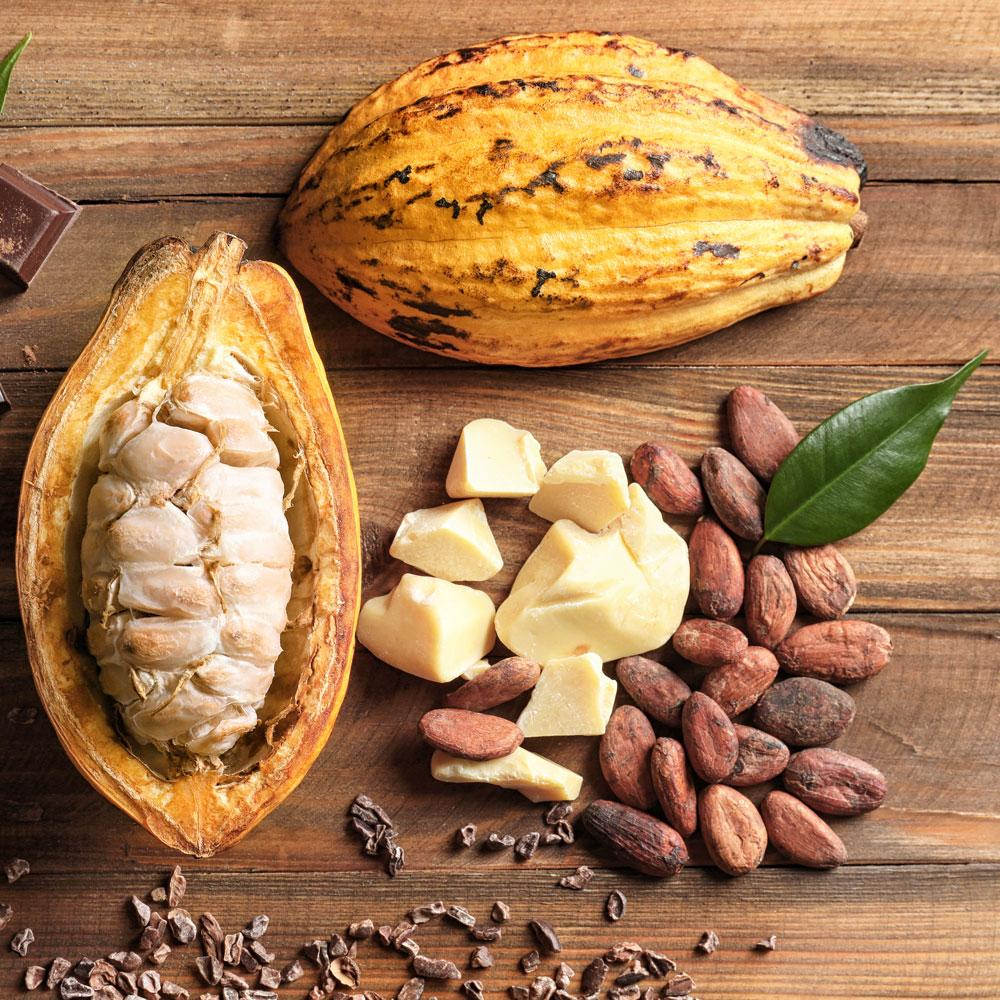
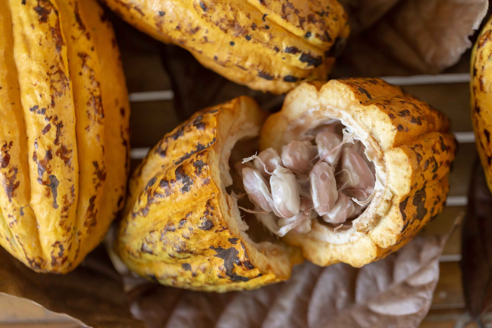

- 

- 

¿Quiénes Somos?
SENNOVA-Sistema de Investigación, Innovación y Desarrollo Tecnológico a través del cual se ejecuta la política de contribución del SENA a la Ciencia y Tecnología del País; fortaleciendo capacidades locales en productividad, competitividad, generación de conocimiento.
En iniciativa del gobierno nacional con el Cacao como cultivo para la paz en Colombia y con el propósito de CAMPESENA de generar un proceso diferencial, integral e incluyente para los campesinos , surge la necesidad de investigación científica para facilitar la transformación del fruto del Cacao , por medio del fomento a la innovación y el desarrollo tecnológico agrícola en el procesamiento de la materia prima.
De esta necesidad nace la ideación del proyecto ¨Diseño de un equipo de procesamiento para la transformación agroindustrial del cultivo de la paz en Colombia¨, el cual busca estandarizar el procesamiento del cacao en campo, con un equipo/prototipo asequible a los agricultores que les genere una trazabilidad del proceso de cacao. La aplicación CacaoLab, será el instrumento para la recolección de datos estadísticos en el proceso de validación de la maquinaria en campo